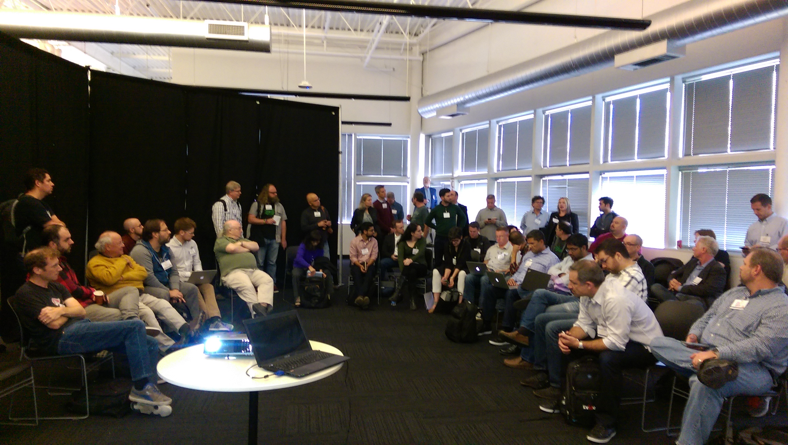
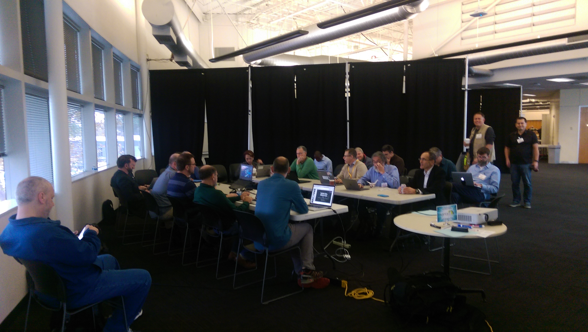

2016 Verifiable Claims Face-to-Face (Day 1)
Minutes for 2016-10-27
- Agenda
- https://docs.google.com/document/d/1uYDRcHs_EOpJzezJerKnKT4Grni1sFLX2nRp7zlq2BE/edit#
- Topics
- Organizer
- Manu Sporny
- Scribe
- Manu Sporny, Matt Stone, Shane McCarron, Gregg Kellogg, Joe Andrieu
- Present
- Manu Sporny, Matt Stone, Gregg Kellogg, Shane McCarron, David Turner, David Robert, Tomas Hnetila, John Tibbetts, Christopher Allen, James Toozny, Scott Fehrman, Chris Webber, Andrew Hughes, Jestin Hopkins, George Fletcher, John Fontana, Phil Hunt, Dick Hardt, Jim Pasqual, Richard Varn, Joe Andrieu, Adrian Gropper, Dave Longley, Eric Korb, Eric Somerville, Heather Vescent, Karen Marr, Adam Lake, Jörg Heuer, Natasha Rooney, Drummond Reed, Timothy Ruff, Jason Law, Adam Migus, Giovanna Mingarelli, Paula Escuadera, Robert Bajor, Nathan George, Don Cameron, Peter Simpson, Heather Schlegel
- Audio Log
- Pictures
-  
Manu Sporny is scribing.
Topic: Welcome and Administrivia
Matt Stone: Welcome to the very first Verifiable Claims face to face meeting
Matt Stone: We're kicking off the Verifiable Claims work before a Working Group is started.
Matt Stone: We have a couple of days of content, standards process,goals of organization, what we're trying to do - why this is important, etc.
Matt Stone: Some administration items
Matt Stone: First, everything is recorded in the public record, you can ask to not be recorded. We want to know everyone who is here, If you have access to chat, state your name, and company.
Matt Stone: We ask that you use the queue to speak, please keep comments respectful and to the point. Everyone should have an opportunity to chat.
Matt Stone, Pearson
Gregg Kellogg, Spec Ops - background in Linked Data / RDF
Shane McCarron, Spec Ops - involved w/w W3C
David Turner, Voltage Gate
David Robert, General Data Protection Regulation
Tomas Hnetila, Kerio Technologies
John Tibbetts, VitalSource consultant, IMS Global
Christopher Allen, Principal Architect at BlockStream, Rebooting Web of Trust
James Toozny
Scott Fehrman, ForgeRock
Chris Webber, W3C Social Web Working Group
Scott Fehrman, ForgeRock
Andrew Hughes, Kantara - Independent Consultant
Jestin Hopkins, Identity.com
George Fletcher, AOL identity architect
John Fontana, Yubico
Phil Hunt, Oracle
Dick Hardt, Amazon, OAuth, JWT
Jim Pasqual, DigiMe
Richard Varn, ETS - co-chair
Adrian Gropper, CTO, Patient Privacy Rights - stack called HIE of One
Dave Longley, Digital Bazaar
Eric Korb, CEO, Truecred - digital credentialing provider
Manu Sporny, Digital Bazaar
Eric Somerville, Independent, pharma supply chain
Heather Vescent, Independent Researcher
Karen Marr, Department of Homeland Security
Adam Lake, Digital Bazaar
Joe Andrieu, First Person, ex-Switchbook
Jörg Heuer, Deutche Telekom
Natasha Rooney, GSM Association
Drummond Reed, Evernym
Timothy Ruff, Evernym
Jason Law, Evernym
Adam Migus, Migus Group
Giovanna Mingarelli, MCrowdsourcing Canada
Paula Escuadera, Collective Shift - LRNG
Robert Bajor, Digital Promise
Dinner will be at Tide House
Matt Stone: We're going to try to quickly kick off, motivation for why we're here - opportunity that has come through our social network, roll clock back, always been true - social networks like church, rotary club, you can represent yourself personally in achievements and credentials to get a job, or get experience to have fruitful life.
Matt Stone: As generations have moved forward, local physical community has become less central to access to opportunity.
Matt Stone: No relationship like what has existed previously, as digital tech has exploded, they fail to provide this authenticity/veracity of evidence that's necessary to enable workers/citizens to leverage their expertise and pursue opportunities. That's what's motivating us to provide a means for claims to be made in an open and verifiable in a digital marketplace that tears down the barriers that are there in a physical and relationship oriented world.
Matt Stone: It's a democratization of this type of content that we're after -
Richard Varn: This is a bit education centric, but healthcare is important as well - right opportunities for right reasons - good in healthcare too. We were going to call this credentials, but that led to confusion in security industry... people are looking to us to put strength around what they can document.
Richard Varn: There are other industries that are involved in background checks, id proofing, transcripts, prescriptions, etc.
Richard Varn: Hiring, student info, LMS, from the evidenciary standpoint, we want to assemble, verify, correlate, infer, and warrant that things are valid. we need a standard for t his.
Richard Varn: Without verifiable claims, this whole process becomes very difficult, I've been working on this for 30+ years, and we need this.
Matt Stone: We need and open standard to recognize and verify credentials and achievements that an individual has earned.
Matt Stone: We have some high level goals - we need sustainability, portable, verifiable, extensible, secure, privacy enhancing.
Matt Stone: We don't want more silos, providers own a portfolio of credentials, but they are not 100% of the marketplace, if you are an individual who has earned credentials in two different places to pull it into one place. We want these verifiable claims to pull things together.
Matt Stone: We've seen many different marketplaces that use different language - you'll hear us talk about claims/credentials interchangeably, we need to represent an achievement about person in a certain way, transfer across systems in a transferable way. Fraud/PII, still provides market to drive content and nature of claim.
Matt Stone: We want to reduce friction that exists in system today.
Dick Hardt: When you say portable, would you want it presentable to anybody, or just a broad range.
Matt Stone: It's really anybody, one of the reasons we're here is that the currency we have is this self-sovereign identity, we take concept of ownership and put it in hands of individual, primary stakeholder in achievement, we want them to share slices of their identity/achievement and show it about them.
Matt Stone: Goal is open standard that anyone can integrate and any individual can use
Dick Hardt: There is a difference between open standard and open system.
Richard Varn: There are a ton of point to point systems, but when someone publishes we want a portable item.
Dick Hardt: Are you building a railway or a highway - highways are harder to build, easier to extend.
Matt Stone: In terms of Verifiable Claims - our problem statement... it's difficult to represent this information on the Web today, other sorts of info on the Web, difficult across stakeholder that's concerned via Web today. Our mission is to make expressing/exchanging that data interesting and more expressible on the Web.
Matt Stone: Our scope, with regards to W3C is really focused on identifying data model and how market can enable it to evolve over time and syntaxes that are available to represent that. Will get into details over next few days.
Matt Stone: This is our agenda today - we start off looking at use cases , generally speaking and specific use cases from industry that will show how we expect this stuff to be seen/used.
Matt Stone: Then after lunch, proposed architecture, goals, new to discussion - participating in calls for 2 years - some of this feels like this is well known for those of us that have been driving these discussions, we need to do a bit of education and listen to observations. Tomorrow you'll see us go deeper into these items. By end of day, we will do brief review of W3C Process, it's a large standards org
Matt Stone: There is rigor in the way that they evolve from concept to standards recommendation. We will introduce what next year looks like.
Gkellogg, you wanted to discuss charter
Andrew Hughes: Where's the best place to find reading material on this? URL? Documents?
Gregg Kellogg: Do we have time to discuss the charter? We highlighted a couple of things that are in scope, the scope may expand over time, charter has a specific meaning in W3C, changing charter is extremely difficult
Manu Sporny: Hughes, here's more material https://w3c.github.io/webpayments-ig/VCTF/
Gregg Kellogg: We should look at what charter says.
Shane McCarron: We can agenda bash tomorrow
Christopher Allen: Want to make clear to people that are new here, I'd love to see W3C make progress, but it's taking forever, we're starting code, deploying without W3C... we're moving forward with or without W3C.
Christopher Allen: If W3C comes up with something better, we'll adapt, but want to participate in process, but don't believe that we have to solve all of these charter problems for us to start shipping this.
Eric Korb: We are moving forward w/o W3C as well, we have a commercial product based on Verifiable Claims.
Matt Stone: That furthers the cause.
Matt Stone: Implementations coming to market - we need to cooperate on this.
Andrew Hughes: Is there a list of emerging implementations that are going down this road? Very interesting
Gregg Kellogg: To follow on - there are two ways for WGs to work - they try to design a system mthat will be implemented, the other is they try to codify things that happen in the real world. That's what we saw w/ HTML for instance. Taking a risk and implementing just make standards work more solid
Eric Korb: +1 Gkellogg
Andrew Hughes: Yes, but don't have list available right now
Christopher Allen: Scope has shrunk down, people want answers out of the scope and we can't give answers.
Andrew Hughes: @Manu - thanks
Gregg Kellogg: We can't create a Recommendation, we can have CGs that push this stuff forward.
Eric Korb: Hughes truecred.com
Shane McCarron: We're getting into the 4pm topic, let's stay on track, we can circle back to W3C nonsense at 4pm.
Manu Sporny: Lunch is a great time to demo.
Heather Schlegel: Is there a list of deployed ideas w/ use cases.
Richard Varn: Is there a list of initiatives? Yes, Lumina has identified a ton of them. Those are not verifiable claims per se, but they could use verifiable claims.
Heather Schlegel: You are already working on stuff, it would be helpful to me to know - would be interesting to see list of things being done, how they influence, eventually they will need to be sync'd up.
Heather Schlegel: Those of us who are interested can do research on our own without hunting though a mailing list.
Heather Schlegel: I'm happy to participate as long as I have clients to participate.
Shane McCarron: Does anyone else want to collect this list?
Eric Korb: Can we have a list?
Shane McCarron: There is something called an implementation report... we should all know who is working on this stuff. It's a valuable thing.
Matt Stone: There is a big phase in here that's about getting implementation commitments and tracking - implementing the standards, we need to know that, no reason not to get started.
Manu Sporny: We have a wiki, start writing it down there.
Shane McCarron: There are people at W3C that are claiming no implementations, we need to help them see implementations is good
Eric Korb: We want to make sure it's not advertising, it's contribution.
Shane McCarron: Good to list them.
Matt Stone: We're trying to get to convergence, disparate stakeholder - professional, earner, stakeholder that cares about status, issuer - these are our stakeholders. These three stakeholders are important to the ecosystem and the process of this working. We need critical mass in all 3 of these camps for this to be successful. It's a complicated discussion.
Topic: Introduction to Use Cases
Matt Stone: New topic: Good Use Cases
Speaker: Joe Andrieu
https://docs.google.com/presentation/d/1WWsv3Y1gcHzR1bE_CBbNxBTrIN1vDw_RohuPqUyfUxs/edit?usp=sharing
Matt Stone is scribing.
Joe Andrieu: Fluid development/requirements modeling
Joe Andrieu: Baseline: in the beginning, we know requirements are wrong and change
Joe Andrieu: Think of a "requirements model" that can provide a mechanism for requirements to evolve
Joe Andrieu: Can get benefit from even a bad requirement
Joe Andrieu: A use case represents "real world value" -- logging in is not a use case.
Joe Andrieu: Should be describable and represent a single transaction
Joe Andrieu: The "refugee use case" in ID2020 was too big
Joe Andrieu: Should be "empathizable" so the reader can understand the intent of the user
Joe Andrieu: 2 Examples: problem domain case and solution domain case
VCTF Use Case: https://w3c.github.io/webpayments-ig/VCTF/use-cases/
Joe Andrieu: Problem - external trigger that caused user to ack
Joe Andrieu: Solution, internal, human trigger
Joe Andrieu: Focus on people, not system to system. talk about specific users, not abstractions. or roles that are clearly defined responsibilities.
Joe Andrieu: These techniques help empathize w/ the user
Joe Andrieu: Needs map is a collection of use cases documented in VCTF, organized by (in this case) industry
Joe Andrieu: The needs map is a "problem domain" view of the use cases
Manu Sporny: VCTF Use Case: https://w3c.github.io/webpayments-ig/VCTF/use-cases/
Joe Andrieu: Solution domain cases are a "task map"
Joe Andrieu: Problem domain cases are implemented through solution domain tasks
Joe Andrieu: Start w/ a scenario - prose paragraph - to understand who the user is and how she interacts w/ the system
Joe Andrieu: For example, jessica is a new employer who has a set of claims to move
Joe Andrieu: Narratives -- sequential descriptions, action/reaction, detailed steps in interaction. can be broken down into either "real world interaction" or "technology free"
Joe Andrieu: Real world example using an ATM machine
Joe Andrieu: Describes the sequential interactions w/ ATM
Joe Andrieu: Ok with injecting technology in this context and personas, like "Jessica enters PIN..."
Richard Varn: Manu--sent you an email copy of the credentials landscape review of 108 credentials initiatives for posting to our VCTF site if desired
Joe Andrieu: Technology fee narrative example: shows user intent and system responsibility, like "Start transaction withdrawal"/"Query identity" - doesn't require PIN, could be something else...
David Turner: Discussion about sequence in this example. does bank require identity first or later?
Joe Andrieu: This discussion is what we like about this approach where technology isn't the focus
Manu Sporny: Nice theoretical discussion, now move to VCTF examples
Joe Andrieu: Show the use case document
Manu Sporny: Community gropu draft document of use case for VCTF that is in the package used in the charter conversation
Joe Andrieu: Anticipated role: issuer, inspector, holder (may or may not be the subject) - minor for example
Richard Varn: Or they have chosen an agent to be the holder of the claim
Matt Stone: (See use case document for definitions)
Manu Sporny: There is pushback on terminology - it's impossible to find the right word that works for everyone. it's a work in process.
Joe Andrieu: We'll follow a process to choose and move on
Richard Varn: We've had a lot of discussions to get to 'this set of words' these roles reflect the reality of the current makeet place. The roles are critical to the functions we're serving
Christopher Allen: Anybody can be any of those roles - every use case should contemplate that concept
Richard Varn: You cannot inspect your own claim but yes, anyone can hold any role including issuing oneself a claim
Dick Hardt: Don't worry about terminology too much. everyone argues all the time, just be consistent
Eric Korb: +1 Rvarn
Manu Sporny: In the w3c process, this will be raised and we'll have to figure out how to respond
Joe Andrieu: Reviews several specific uses cases in the document by industry
Dick Hardt: How do introduce a new category of use cases
Dick Hardt: Small community (web of trust example), self signed claims, connect to other individuals, anonyous claims, evidence, reputation
Joe Andrieu: New category- "communities of trust"
Heather Schlegel: Military is a community
Heather Schlegel: Military requires other attributes like security provisions, etc...
Heather Schlegel: Working on use cases that we might use
Richard Varn: Thoughs on the utility, value of the examples we have ?
Dick Hardt: There may be missing some details that are more individualistic
Richard Varn: Clubs and memberships
Joe Andrieu: If we had a full day, think of all the ways you can use a paperclip type brainstorm. first expand possibilities, then focus
Vivian: IoT in scope or out of scope?
Joe Andrieu: Where are the people involved
Christopher Allen: Who has the agency?
Joe Andrieu: Missing something like "tickets to an event'
Shane McCarron is scribing.
Matt Stone: Closing this session, moving to industries next.
Topic: Education Industry Use Cases
Manu Sporny: Slides are here: https://drive.google.com/open?id=19r0Mq_dQfCvuqjpBNHvciidX5j8ffo5ocEK4pxqjxts
Speaker: Robert Bajor, digital promise
Innovation in Education mission from Congress. 11 initiatives. one is on credentials
Rob is here representing the badge alliance today
Paula Schandra - learning in the digital age
Richard Varn: I think we need an entity use case like we are a tax exempt organization, this organization is a registered corporation in the state of X, or this entity has a permit to do X.
Robert is also here presenting the Badge Alliance
Robert does an overview of what an open badge is.
Robert Bajor: Educators can earn badges. Data needs to be baked into the claims
Paula Escuadera: Working with 12 cities to start integrating local organizational experiences with digital experiences
... millions of badges have been issued already all over the place.
... they are used, developed, and created by various stakeholders who have a real investment in ensuring that they are accurate.
Robert Bajor: This type of learning is happening nationally. Some of these people never see one another.
Shane McCarron: There are a lot of ways that badges are being used. Robert presented a few examples.
Shane McCarron: Working with a variety of states to get continuing education credits. Hope to get all states eventually.
Paula Escuadera: Open Badges will be adopted as an IMS Global Standard. Official working group in planning to launch January 2017
Manu Sporny: How many organizations are involved in IMS?
John Tibbetts: Hundreds
Manu Sporny: One of the primary standards bodies in the education space.
Manu Sporny is scribing.
Shane McCarron: I liked the use cases, did you look at the education use cases that we have?
Shane McCarron: I'd be interested in getting your feedback on how they could be improved. At the end of the day, we try to synthesize down to scenarios that differentiate. Let's have some scenarios that reveal unique requirements.
Shane McCarron: That's what makes use case documents helpful to others - if we have 7 use cases that come down to "portable", that's not as helpful. But if we get different requirements out of that, that would be very important.
Shane McCarron is scribing.
Robert Bajor: There are three major players. Educators earn credentials. Providers create the content and verify that it is valid. Districts verify that the content is legitimate and certify it.
...Based upon those three stakeholders we could come up with some really useful examples.
Christopher Allen: Have you looked at the VC work? DIDs, data formats, etc. HOw close are you to what VCTF is proposing.
Robert Bajor: Have you looked at open badges? Nate Otto is the expert.
Richard Varn: The types of use cases they are describing are largely covered by the IMS working groups.
...The VCTF / W3C work is about making that information portable outside of that ecosystem.
... What is interesting is how to manifest the information in a way that is searchable so that the credentials can be used to help with cirriculum development.
Robert Bajor: It is finding information, as well as supplying the information.
Manu Sporny: Nate Otto is part of the group. We have been working with them for more than 2 years.
... They have migrated to JSON-LD with JWT signatures.... we use linked data signatures. We are seeing the merging of the two technologies.
... what Nate and the group have been talking about is embedding open badges within a verifiable claim.
...(claim composition)
... open badges is a meta-data model.
Christopher Allen: An open badge itself is not a verifiable claim. It can be put into one.
... there is an MIT group that is doing similar things...
... the third thing I have heard is multiple signature. Multiple people need to sign things. Sounds like a requirement for the verificaiton working group.
Adrian Gropper: About the two sided advertising. It seems like an uber-use case. I have been on some calls and at RWoT and have never heard this before.
... my question is - is this a class of requirement rather than an requirement itself?
...Specifically the ability to advertise or seek. Is this a requirement?
Richard Varn: The other groups call it signalling. You need to be able to build an app that can help discover things and share things.
... you need to be able to produce the information in a form so that it can be consumed.
... "micro-credential economy"
...The difference is that we can invoke an identity service, express the information in a standardized format, and normalized in a data model that allows it to be machine consumable.
Adrian Gropper: I have not seen this before and it is important. It should be somewhere.
Paula Escuadera: One of the problems LRNG is trying to solve is helping employers be able to ask the right questions.
Manu Sporny: All we can do is create a data format in the working group. But having said that we need to capture these concepts in the use cases or something
... but the current data model supports this.
... Multi-sig is something that absolutely needs to happen. Open Badges has another term for this.
Christopher Allen: Are we verifying individual signatures, or verifying within a composite
Manu Sporny: It is out of scope
Christopher Allen: But it is within the scope of the new verification community
Christopher Allen: I am worried about putting an open badge within a verifiable claim. What are the things in an open badge that a verifiable claim is unable to do? Why aren;t they the same
Robert Bajor: That's a great question.
Richard Varn: Data elements are well defined already. We need to express them in a verifiable way. But the OBI already has a rich data model.
... It is the other specific things like verification. Like high stakes work. Verifiable Claims needs to handle this.
Christopher Allen: We can get into the complicated verification models later.
Topic: Healthcare Use Cases
Adrian Gropper: Presenting slides about healthcare
Manu Sporny: https://docs.google.com/presentation/d/1QPx7W0adkYGT-7vtFLO5-BQpC19uz4z_USr9KaCugOs/edit?usp=sharing
Gregg Kellogg: It seems to me that there is something more complicated going on here.
...Classifying the MD as the subject seems wrong. That is the patient.
...Also, the MD has a certificate already from the DEA.
Adrian Gropper: In this use case everything is about the MD.
...A credential is maintained by the medical society because the issuers do not have servers.
...medical societies don't want liability in this. They just want to be a directory.
...The MD has permission to issue because their credentials are in good standing.
Adrian Gropper: I see this as a single transaction. My goal is to map the typical transaction.
Richard Varn: "I see this use case as a nested use case" some of us are saying. That doesn't really change his use case. It is just how it might map into our world.
Adrian Gropper: Yes, and the reason it is NOT a nested a use case is because my goal is to make it single so that the patient becomes the holder of the prescription and regains the ability to shop that around.
Richard Varn: We need a way to express that there are dependencies / layers within a claim. We may not have talked about that as much as we need to.
Manu Sporny is scribing.
Shane McCarron: I think he did that, there is only one inspector in this transaction.
Shane McCarron is scribing.
Jason Law: You can address the complexity by leaving the responsibility to the inspector
Shane McCarron: That's exactly what he has already done.
Gregg Kellogg: This implies the prescription is issued by the medical society.
Manu Sporny: Well, the medical society issues a claim to the MD.
Gregg Kellogg: So the claim is NOT the prescription. It is the doctors credentials.
Manu Sporny: In this use case, yes. Eventually they might get to where the MD can issue a claim that is a prescription.
Christopher Allen: Either are possible. It is just the way that the DIDs work and the way the pharmacy's IT department is willing to implement the inspection protocols.
...There is a one-time-use aspect to this claim.
...What is a minimal viable credential that can satisfy all the use cases?
Christopher Allen: Depending on how we implement it is up to the people who are using the credentials, cryptography, claims...
Christopher Allen: The inspector should be able to walk the dereferencing tree and make decisions about who I trust and who I don't trust. If there are enough for me to trust it I go ahead.
Manu Sporny is scribing.
Shane McCarron: We'll talk about architecture and composition later.
Shane McCarron: They're acting as a repository
Shane McCarron: That's a piece, then the doctor is issuing a claim, and the target is this person. But the pharmacist needs those two claims plus information about that patient's medical records and that person's other information.
Shane McCarron is scribing.
Adrian Gropper: This is important. The concept that the paper prescription can be moved is something we want to maintain.
Adrian Gropper: In reality what we want is Alice to record that there was a scrip written into their health record.
Manu Sporny is scribing.
Shane McCarron: I agree with what you're saying, we don't want to lose the fact that alice is in charge of her prescription... she gets to choose what information is shared. So, she gets to decide what to share?
Shane McCarron is scribing.
Joe Andrieu: I would break it into two use cases. One is the doctor wants Alice to get the medicine. The other is Alice is wants the medicine.
Eric Korb: How long does the claim last? O got it now I am done. What about refills. What about moving among pharmacies for refills?
Adrian Gropper: If we go there we get into the scope of time and interest. You could factor in decision support and actors.
...Sometimes there are existing relationships that can be taken into account.
Adrian Gropper: The world looks very different when you look at it from a self-sovereign perspective
Richard Varn: There is a bunch of business logic that is already done. Already built into the systems.
... there are already a lot of rules for how pharmacies deal with prescriptions. We need a way to refer to existing rules for things that are solved provblems.
Manu Sporny is scribing.
Shane McCarron: Yes, that makes sense, why reinvent the wheel.
Shane McCarron: Eric brought up a good point, Adrian talked about self-sovereign. I think Pharmacies make it difficult to go elsewhere. On the other hand, it's really interesting to me. I should be able to walk into anywhere and provide my healthcare records, etc.
Shane McCarron is scribing.
Richard Varn: We cant force a business rule change with a standard.
Adrian Gropper: The uber use case. Matchmaking of whatever you want to call it. We do model this in the reference implementation. We use a service that can tell me what the costs could be for a prescription as an example.
...But we can limit the information about what is known to the service provider. Share the information to shop the prescription.
Eric Korb: What you are doing is coming up with vertical use cases and then harmonizing the with horizontal requirements.
Richard Varn: I would love to have a disintermediated prescription world. But it isn't something we are going to be able to enforce.
Topic: Payments Use Cases
Jörg Heuer: Presenting information about the value of integrating technologies into purchase processes
... "It has a thing-y aspect to it"
... Additional apps are an impediment to adoption.... people don't like to install them
Manu nods
Jörg Heuer: We need to be able to handle lots of things like NFC, optical character recog, UPC, QR
...When talking about claims, all of these things are possible.
...There should be streamlined redemption of coupons during checkout. This is different than claims of education credentials.
...Use story. Customers want coupons to just be automatic and transparent. Issuers of coupons want people to see them
... these requirements are conflicting.
...Setting up an open source project for wallet handler. Could work for claims in addition to payment instruments.
...Design allows for arbitrary interaction between the issuer, the holder, and the inspector. Flexible data formats.
...Wallet allows for communication to targets like web pages, NFC, BT, etc. Could send payment information, claims, etc.
Manu Sporny: Some shops need to know things about you to sell you things.
...as a general statement I think there are some financial use cases and retail use cases. But we probably need more.
...digital coupons would help push things along for the retail industry.
Jörg Heuer: If there were a good general architecture then the number of modules for moving claims would decrease dramatically.
Matt Stone: How is a loyalty card a claim?
Jörg Heuer: Think of a VIP club membership. When you are in a store that uses that club, I will need to prove I am in that club.
... I think that means it is a claim.
Matt Stone: So your claim is the membership. Which might associate with the point levels or whatever on the backend. What you carry is the claim.
Timothy Ruff: Where is the wallet hosted?
Jörg Heuer: The original idea was an app on a device.
... what we did was that we introduced a backend with an HTML5 / phonegap application so that it would run anywhere.
Timothy Ruff: Okay - but WHERE is the wallet?
Joe Andrieu: "There is no cloud. It's just somebody else's computer"
Jörg Heuer: The idea was originally that it was associated with an operator who would host the information.
Timothy Ruff: Is there a way to combine this with a self-sovereign identity.
Jörg Heuer: If you don't need the hardware stuff, then yes you could do things today./me notes 3 minutes
Timothy Ruff: Ecosystem is different than self-sovereign
... self-sovereign means you accept *me*. Not the *me* that some other company is verifying.
Jörg Heuer: Yes. And it should be possible but there are some requirements when special hardware is involved (e.g., a secure element for EMVco).
Topic: Verifiable Claims Proposed Architecture / Goals
Gregg Kellogg is scribing.
Shane McCarron: When i talk about VC, i start with the problems we’re trying to solve. The problems feed into the architecture.
… It’s self-sovereign to the point it leads into the claims.
… Key aspects are composability and distribution. Claims should be used to the extent that I approve.
… The value for W3C is enhancing the usability of the web; but we know it’s not just the web.
Manu Sporny: One of the things that people continue to confuse is that we’re only working on data model/syntax, but questions come up about protocol and other things that are out of scope for the WG.
Matt Stone: Is this the right venue to talk about continued role of CG vs WG.
Shane McCarron: Problem with WG is you’re stuck with the charter. CG is responsible for the vision
Manu Sporny is scribing.
Gregg Kellogg: Should be an IG
Gregg Kellogg is scribing.
Shane McCarron: Yes, but we have a CG, and not an IG.
Manu Sporny: IG has more official capacity.
Shane McCarron: IG is “Interest Group”, member only. CG is “Community Group”, allowing everyone.
… is talking about the architecture at this level a problem?
Manu Sporny: Yes, because people get confused.
Shane McCarron: You have to start with the foundation before you can build on top.
… Anyone can associate a claim with an identifier. This goes back to composability.
… We want issuers to be able to revoke claims.
… We’re vertical neutral. We’re doing vertical use cases but extracting horizontal requirements.
… The terminology is problematic, but not worth the fight. As we get new members, we’ll get more opinions. But, we need to use something (Bagel is taken :)
Jörg Heuer: Some of the terms bother me. “Identifier” implies something else to me.
Richard Varn: Perhaps “Identity” instead?
Manu Sporny: Absolutely not!
Jörg Heuer: An identifier has meaning.
Manu Sporny: In this case, “identifier” is the subject identifier used to bind attributes to.
Shane McCarron: The charter uses “identifier” in this sense.
Jörg Heuer: So, the identifier doesn’t mean that the claim is associated to an identity, but to an identifier.
… I’d like to make sure that’s separated.
Shane McCarron: Naming is hard!
… I’d be happy to see that claims can exist without being associated with an identity
Matt Stone: Does this allow abstract things such as repositories to be identified?
Richard Varn: It’s up to the use case to see if the identifier is bound to anything.
Manu Sporny: You care that the data matches, the identifier isn’t significant.
Shane McCarron: If I use a VC as a ticket to a concert, the venue wants to be sure I’m the one using it, and not scalping it
… Identifier used in a claim isn’t used for anything else. It’s only the components of the claim that have lasting meaning (US govt, etc.)
Jörg Heuer: Does revocation has a similar optional quality? I’m not sure that we always want claims to be revocable. You just wan’t to be sure it’s your’s, e.g. DRM.
Shane McCarron: We actually have the problem with DRM on DVDs. (Also bluray’s).
Manu Sporny: Revocation is optional, it’s a feature that can be added.
Shane McCarron: If I create a revocable claim I can always revoke it.
Richard Varn: You have a degree for the rest of your life, and I can’t revoke it.
Matt Stone: It can be rescinded, not revoked
… Do we have a use case for rescinding an irrevocable claim?
Shane McCarron: If the state issues a claim that’s part of my driving record (DUI, for example), I can’t revoke that (subject), only revocable by issuer.
Manu Sporny: The architecture allows a link to be added for revocation. But, if you have something like a citizenship, you may want to revoke it.
Richard Varn: We’re conflating business rules with architecture for revocation.
Shane McCarron: “We shall not prohibit” these things in the architecture.
Adam Lake: I’m looking at assets and liabilities. If a prison record is a claim, the subject cannot revoke it. We’ll only issue claims that are assets, not liabilities.
Jörg Heuer: In Germany, we’re able to issue digital cards, and mark that a card was read at a certain time. Not the same as representing an EID card; from this we could allow applications that do not show these things. We should enable it in the architecture.
Shane McCarron: What’s not built in is decomposition. You can’t extract things from a claim.
… A claim always has an identifier for a subject, and claims about that subject. Metadata and a digital signature. As you compose new claims, you’re creating supersets of this. This structure addresses most use cases, if metadata is done right.
Richard Varn: Is digital signature sufficient to describe these things.
Shane McCarron: We think the term is adequate; LD signatures talks about the different ways claims might be signed.
Adam Lake: What about claim sets, with different identifiers?
Manu Sporny: That’s different from claim aggregation. Saying that one identifier is the “same as” another is more difficult.
Adam Lake: If I want to use a specific identifier for somethings, does the architecture support that? You’re going to end up with a different structure for different RPs (Inspector).
Manu Sporny: I think the fundamental principle is that multiple orgs will issue credentials. The data model makes sure that the format is the same.
… The more identifiers you have, the more you have to manage.
… The architecture allows this, but you need a different software agent that’s really good at managing these things.
… One of the things that’s changed since SAML is schema.org, that is a common place to describe these things.
Adam Lake: For some, that’s a non-starter.
Manu Sporny: In an open eco-system, common vocabularies are necessary.
Shane McCarron: These can be managed in a context. This allows mapping terms to the same vocabulary terms.
Richard Varn: If you want to have many claims about age, who is responsible for describing the different claim terms? Does this reduce to a numeric value?
Adam Lake: Greater than works, for an age, less than doesn’t, as it changes over time.
Shane McCarron: We don’t have specific terms, they will need to be added.
Manu Sporny is scribing.
Gregg Kellogg: Ultimately, it reduces to the choice of vocabulary, if someone just makes up the vocabularies, schema age vs. foaf age - one is going to use one, one is going to use the other. Is there some way of agreeing to figure out which vertical will use?
Gregg Kellogg: More and more is fine, but if anyone chooses what they want to use...
Gregg Kellogg is scribing.
Manu Sporny: We expect vocabularies to emerge in different verticals; we won’t standardize.
Shane McCarron: Subject doesn’t come up in many of the use cases, but the subject of a claim may be a thing that will never be a holder (e.g., Dog).
… We need some kind of identifier registry (DiD management thing) that’s keeping track of the identifier space. These are important terms when we talk about composition.
… A curator can help maintain a collection of claims, and perhaps mint them over time (composition of other claims)
Adam Lake: The main use case will be to create claims on the fly
Richard Varn: We’re saying claims and that they can be composed of different data elements. Do we need to say anything about elements of a claim being composed.
Manu Sporny: The way we do it in the spec is different than varn said. The issuer chooses to bundle together a set of attributes. The holder can’t de-compose these. The issuer will issue a claim with all attributes, but may choose to issue separate with individual attributes that allows for future composition.
Matt Stone: A holder can’t de-compose a grant, unless it was discreetly issued.
Shane McCarron: That’s a design choice. It’s easier to talk about discrete granular claims than de-composition.
Matt Stone: The issuer won’t want to give holders claims for all combinations.
Manu Sporny: There are types of signatures that allow the receiver to recompose.
… You can prevent claims from being composed.
Dave Longley: Note: different signature schemes may allow for decomposition/selective disclosure in the future (we should allow for extensions like this and we currently do)
Shane McCarron: Dlongley’s point is fair; we’re not preventing that, but we’re not designing for it either.
… In this case, the holder becomes an issuer (composition).
Shane McCarron: You may have a composed claim, and they need to chase it down to determine that one composed claim is from Kaiser, which they do trust, even though they don’t necessarily trust the holder.
… There are all sorts of places in the architecture where people are doing inspection Just because you’re a holder doesn’t mean you’re also an Inspector.
Manu Sporny: These issues are discussed in more detailed diagrams. For example, a hospital may hand off inspection to another part.
… If you go to the DMV, and they issue a claim, you may want to inspect that before putting it in your wallet. (Perhaps it was a bogus issuer).
Shane McCarron: The ecosystem will specify a trust model, not part of the architecture.
Adam Lake: Trust models that evolve organically aren’t always good.
Christopher Allen: We want to make sure the architecture allows the important trust models, but can’t mandate them.
Manu Sporny: Once we have a WG, there may be large interests that want to restrict these things.
Christopher Allen: The self-sovereign community has already had a big impact on this. No one has a privileged place.
Shane McCarron: It comes down to if the inspector buys into your trust model. One of the use cases discusses this.
… If a credential is composed, the inspector needs to buy off on the trust model to follow a chain of issuers.
Christopher Allen: This is analogous to the way first and second generation block chain systems work.
Shane McCarron: We talk about enhancing usability on the web. automating verification, accessability.
… If we can make the stuff real and automatic, it levels the playing field. Let’s not prohibit this in the arch.
… Fraud reduction; this is a real problem, if we can automate that ...
… The US government may want to delegate these services.
… We want it to be ubiquitous, but also decentralized. Pick Google, it’s ubiquitous, but not decentralized.
… Privacy enhancement is a big deal. Holders are responsible for the claims, and get to determine who sees it.
… We need to provide for a period during which the claim can be used (or verified).
Christopher Allen: I want to highlight repudiate/revoke. It’s hard, which we learned with certificates. Revocation lists didn’t work. Also, when you do that with the current approach, you’re leaking information that it was submitted.
… We can do it, and it will work, but note that it is hard. Depends on if the issuer wants to be available, and risks privacy.
… The short-term validation helps.
Richard Varn: Why can’t the spec include the ability to expire the decryption of the payload.
Shane McCarron: There’s physics, business rules and law. Physics can’t be circumvented.
Adam Lake: Google walked away form session timeout while recognizing that revocation was not solved.
Matt Stone: If the claim expires, the verifier gets market analytics every time it’s used.
Christopher Allen: You can have the identifier be a bitcoin address that is valid if there are funds on it, and not valid otherwise. This allows revocation without leaking information.
… The idea of people wanting issuers to optionally be able to add evidence; which means that it may be happening on this side, where i’m not just looking at the issuer, but the evidence. It’s not precluded, but we may want to highlight it. (came up in open badges).
Richard Varn: Can you push additional metadata after it’s signed (no). You might add a link in the metadata that could be followed to find out renewed/additional evidence about a claim.
Christopher Allen: We don’t just verify the claim, but the evidence in the claim. (A soldier includes a photo as evidence in a claim about a refugee).
Richard Varn: Claim metadata can be included or referential; most want to use referential to allow for update.
Matt Stone: We’re asking if the claim is valid, and if we trust the issuer and their evidence.
Joe Andrieu: We’re also talking about identify insurance. We need language about the business rules involved with verifying a claim.
Joe Andrieu: "Identity assurance" - meaning inspecting the claims' contents verses business rules
Shane McCarron: There are parts of this we haven’t covered.
… We haven’t talked about adding something to a claim.
Topic: Data model and Representation Overview
Joe Andrieu is scribing.
Manu Sporny: There is a spec. Our focus is, specifically, on Syntaxes and Data models. Not protocols or APIs
Spec is in agenda. We're doing a deep dive tomorrow.
Manu Sporny: Blockchain can help address privacy issues with checking revocation of credentials
Manu Sporny: Data within claim could be a single attribute (claim set) or multiple, such as an entire scholastic transcript
Christopher Allen: We've said id is where you go to check revocation. maybe that's not the best way
Manu Sporny: Claim set / credentials / composite claims terminology sill being defined
Christopher Allen: I'd love to see every time we mention digital signature, we add ", timestamp" because timestamp is important part of some compositions, and NOT a signature
*Break*
Manu Sporny is scribing.
Topic: The W3C Process
Matt Stone: Richard and I are going to lean on the people in the room on the process.
Matt Stone: High level - W3C is a 420 person member organization
Matt Stone: Each organization gets a say on quality/direction of standards/recommendations.
Matt Stone: Via AC rep
Matt Stone: Decisions are made based on consensus
Matt Stone: It takes a lot of work to make a decision and have that decision stick. We've been working on this for at least 2-4 years, we're building consensus on larger community
Matt Stone: We're representing the need for a solution in this space. Net impact is two fold, standards that get adopted and used, equality and value, but takes a long time to get there.
Matt Stone: Next year, key milestones - Create WG - official charter under review.
Shane McCarron: There was some push back - no one is saying I"m going to build/use this - those are the comments today.
Richard Varn: We can have others weigh in.
Gregg Kellogg is scribing.
Manu Sporny: There are a number of people in rebooting web of trust that are frustrated with W3C and are planning on moving ahead and implementing anyway.
Manu Sporny is scribing.
Gregg Kellogg: We have a number of people saying that they will implement.
Shane McCarron: This can be handlable - we can deal w/ this.
Natasha Rooney: There are examples of things done in app space that are taken up. Those people that work in that way at W3C see a lot of success, previous Techinical Architecture Group liked that - a lot of people are holding on to that methodology. That's where it comes from.
Shane McCarron: I think it makes sense, in that case.
Shane McCarron: I think a lot of people also think that only the browser is the Web platform, this isn't just about the browser.
Joe Andrieu: You can't do the crypto stuff you need w/ browsers today....
Gregg Kellogg is scribing.
Manu Sporny: We need to be careful about we state, as the charter is under review.
Manu Sporny is scribing.
Matt Stone: Assuming we navigate these waters this quarter, the schedule may shift.
Matt Stone: IF the group is formed, we should p lan our next face-to-face.
Natasha Rooney: Have you talked w/ Wendy about this?
Manu Sporny: Yes.
Natasha Rooney: They don't have a strategy around blue sky - when I have conversations w/ Alan, in practice, they get squashed pretty quickly. Maybe we should have a discussion w/ Wendy - not only do they want to take native stuff and work on those, but make sure Web is where these things are done.
Eric Korb: What's the problem here?
Richard Varn: Intellectual and proprietary interests.
Matt Stone: I think disintermediation is playing a role.
Richard Varn: One comment we got from Microsoft was that none of their customers wanted Verifiable Claims.
Eric Korb: Microsoft is releasing verifiable claims as a product
Drummond Reed: Assuming these organizations block us here, what is the fastest path to standardization?
Someone: Take it to another standardization body.
Richard Varn: IMS Global has said that they're willing to house this in their SSO.
Eric Korb: Can Pearson flex its muscle there?
Pearson: We can do more - our organization is very excited w/ what we're doing.
Richard Varn: We are willing to walk from W3C if they keep dragging their feet on this.
Matt Stone: Once there is a successful vote, a WG is created.
Matt Stone: Once that happens, we can have people from W3C members and Invited Experts.
Matt Stone: Once WG is created, people participate.
Matt Stone: At some point, we need to figure out when the face-to-face is going to be. Candidate for next face-to-face is IIW.
Matt Stone: We should ask them if the way we organized was too disruptive.
Joe Andrieu: What Project VRM has done is sequestered Monday
Joe Andrieu: So disruption is minimized... Monday or Friday might be good synergy.
Gregg Kellogg: One consideration is IIW is always here.
Joe Andrieu: The next Rebooting is going to be week prior in Paris, then here.
Gregg Kellogg: The meta question is the utility of having people involved in IIW w/ some participation - we've benefited from the exposure.
Richard Varn: I agree with that, we've learned a lot - you need to go to them, or bring them to us, or do it virtually. We should put it down as a definitely consider... inviting some of them to come to our WG is another dimension of that.
Gregg Kellogg: In past IIWs, there have been W3C staff to do outreach.
Richard Varn: We can bring some sessions back to IIW
Matt Stone: That's certainly more in line w/ IIW - if we can integrate more seamlessly into their agenda, do a WG session -doesn't have to be either or.
Jörg Heuer: IIW is about starting things off - what can we do w/ IIW but then report/build on that - self-sovereign movement helps us a bit.
Shane McCarron: We were talking about architecture and use cases and big picture thinking, which is different from day to day grind of specs. W3C does IG to do incubation... the IG or CG could do stuff at IIW.
Richard Varn: I would be willing to provide conference facility - ETS in Princeton. San Antonio - there are other opportunities.
Matt Stone: Advancing to Recommendation
Matt Stone: Once the WG is in flight, the goal is to produce a technical recommendation - there are six phases of this... levels of mateurity - FPWD, WD, CR, PR, REC.
Matt Stone: As we look into 2017, the bulk of the work is about the WD - this year, coming up, is about getting first published working draft done. Get feedback from stakeholders.
Matt Stone: Getting to FPWD -
Manu explains the FPWD process
Shane McCarron: Testing is a bit unusual, we're not really building anything - it's about a data model and a vocabulary - no protocol/api nothing to exercise.
Richard Varn: So what's an example of a test we can do?
Shane McCarron: You can evaluate the implementation - a JSON-LD context that defines your vocabulary - you make sure it works interoperably... another part is doing isomorphic transformations - take the data and transform it via RDF - and then transform it back.
Shane McCarron: Those are the two ways you can check the data model that the W3C Management accepts. You have to prove that your thing is implemented.
Gregg Kellogg: On the other hand, most vocabularies have logical consistencies - make sure your vocabularies are consistent.
Eric Korb: We could do it as partners... send and receive credentials.
Gregg Kellogg: Specifications make normative requirements.
Gregg Kellogg: Test suites should limit themselves to testing normative requirements.
Shane McCarron: We did this with web annotation work recently
Shane McCarron: Another thing w/ vocabulary testing - how do we ensure that all the terms in a vocabulary are needed and used - how do we make sure that happens.
Shane McCarron: In that context, they're going to see if all terms are used.
Joe Andrieu: You could have verified claims for all of your use cases.
Eric Korb: We can just use HTTP to pass.
Gregg Kellogg: We can create examples that are serialized, make sure they round trip to data model, and that they're consistent.
Richard Varn: Would that teach us anything useful
Gregg Kellogg: It taught us something for web annotations - so yes, it works. It caused changes that fixed things.
Matt Stone: We'd take a number of credentials across a number of industries, render them into the data model, see if it works.
Gregg Kellogg: One way to do it is to mark up use case document that takes items out of use cases and statements match...
Shane McCarron: Is the purpose is to get over the hurdle... if it is, it's a waste of time. we want to make sure this is something that's useful over time.
Joe Andrieu: There will be parties that will want to evaluate it, they will want to take their needs and map it to them.
Richard Varn: There are groups of people that want to produce a transcript - we require before you unload payload, you have to pay something for it.
Richard Varn: You can't just take my credential and dump my credential to anybody - one of the validations, how do you validate it in the transfer - but you don't transfer the keys.
Matt Stone: Which credentials can be composed or not.
Manu Sporny: Other groups have been successful doing this, we should pay attention to them.
Matt Stone: There have been questions around expiration,
Joe Andrieu: You're talking about a link contract - so we need a hook in there, but it's more than just vocabulary
Manu Sporny: Two types of testing - testing for utility and testing for interoperability.
Gregg Kellogg: There is required input from internationalization groups
Shane McCarron: There are inputs from internationalization, security, accessibility, privacy.
Shane McCarron: That CR review process - CR means "We think we are done" - we are going to go through a test cycle, proving that we are interoperable.
Gregg Kellogg: Many groups have made the mistake of waiting until the end to do their test suite, we should have an understanding of interoperability
Eric Korb: Is part of the test signature testing?
Gregg Kellogg: We just need to prove that you can do multiple types
Richard Varn: Not much that needs to be done there, right
Gregg Kellogg: Well, verifying a composed claim - there is some technical questions that are raised.
Shane McCarron: One of the things you want to remember, these tests - the purpose of them - not to determine whether implementation works - implementations conform to the spec - they all work the same way.
Eric Korb: Would you submit the data model differently based on one signature vs. another?
Shane McCarron: No
Gregg Kellogg: No - we need some demonstration that something can serve the purpose of the signature here -
Eric Korb: It goes to the integrity of the data model,
Joe Andrieu: You can imagine a signature method that doesn't work w/ the data.
Gregg Kellogg: You can think of a case where you compose things down that don't work.
Richard Varn: There are people that design how competencies are grouped, those are more easily composable - those elemental components - who is verifying that the combination of those means anything.
Matt Stone: We should be very careful of taking on the task of validating issuer and composition - we don't care if compiled credential has value in marketplace.
Matt Stone: From a market value perspective, if it's issued, we have met our goal if it's verified.
Topic: VCF2F Day Two Agenda Bash
Stone reviews the agenda
Matt Stone: We start w/ agenda review
Matt Stone: Then go into long term concerns
Matt Stone: Then a break
Matt Stone: Then a deep dive on data models
Matt Stone: Then lunch
Matt Stone: Then digital signatures, then we're done
Shane McCarron: That sounds great, it'd be nice to look at implementations
Shane McCarron: It would be nice to look at implementations if we have extra time.
Joe Andrieu: How does updating the use cases fit into this model?
Shane McCarron: A CG or a IG can be responsible for taking care of use cases. Sometimes its good to be done outside so you can do more blue sky thinking.
End of Meeting